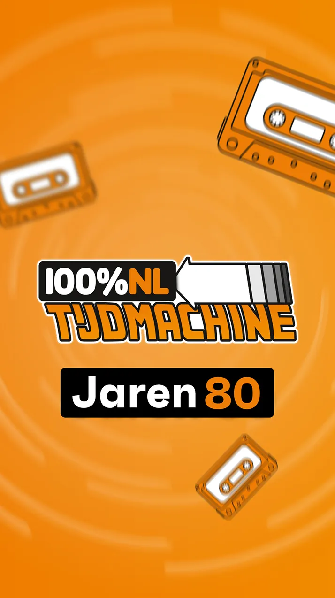
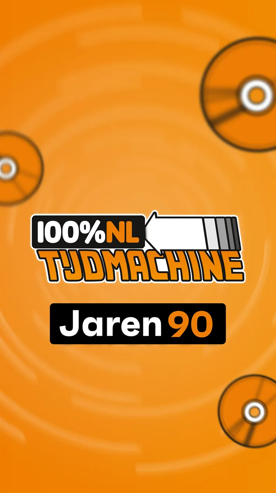
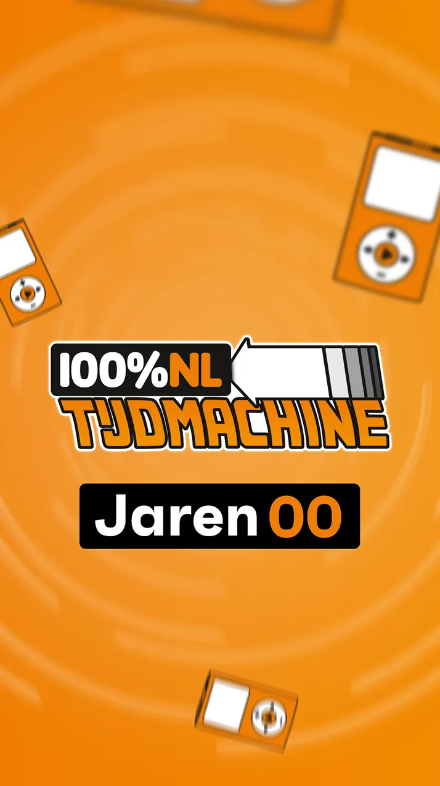
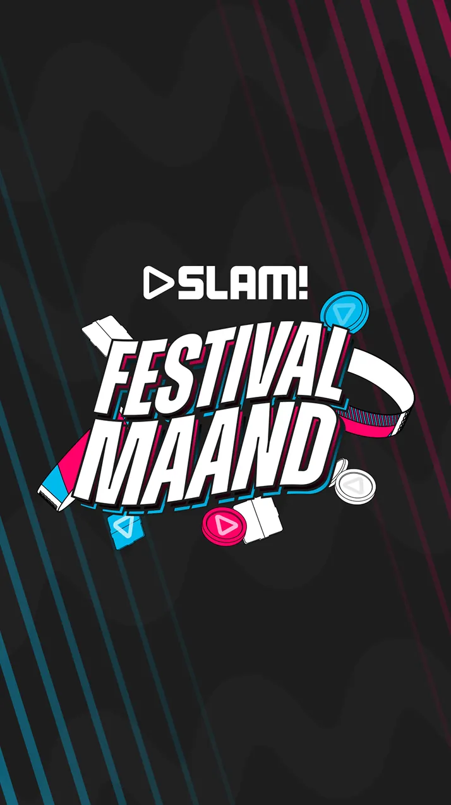
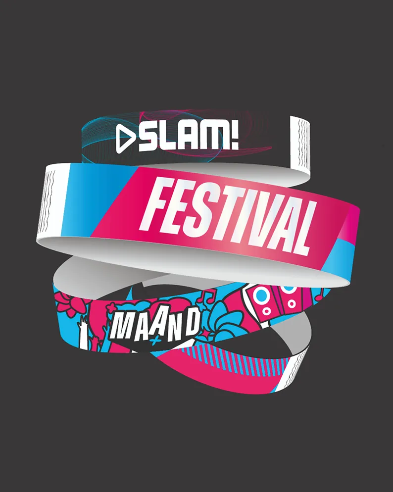
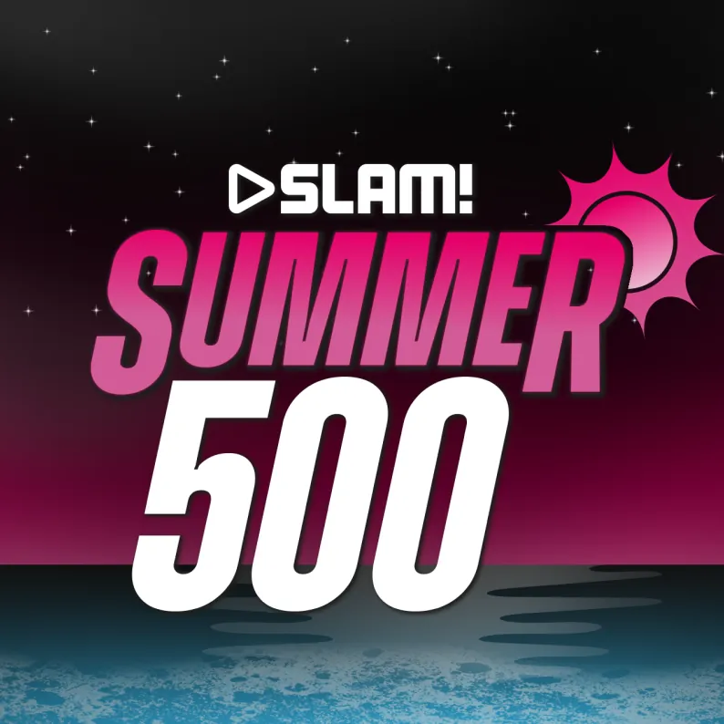

Three stations. One designer.
Not every brief is a billboard. Most days I make Radio Veronica, 100% NL and SLAM! work in a hundred small places. Scroll to tune in.
Big, blue and always in on the joke.
Studio screens · social · quiz shows · Het Radio Veronica Café


Sing-alongs, Sinterklaas and a time machine.
Tijdmachine · Top 1000 · Somertijd · Sinterklaas





Loud, late and never still.
Festivalmaand · Summer 500 · Gok van je leven · Alaafondshow






And the ideas around them.
Next to design I pitch branded content, like The Best Best Man for SLAM! × OFM and Jumbo × 100% NL's Het Super Kerstdiner. See the full case.